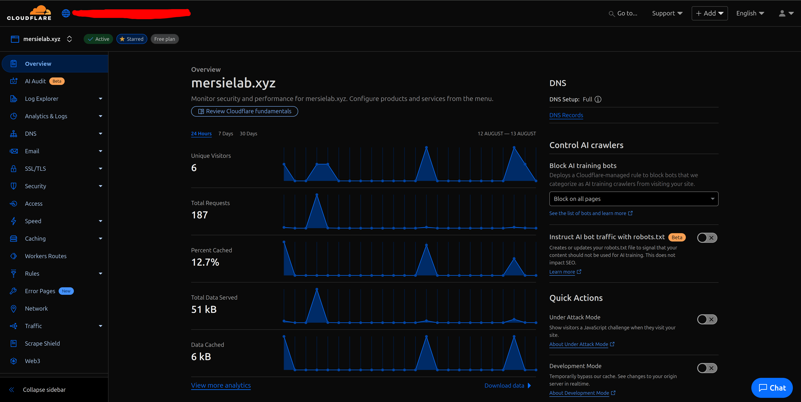
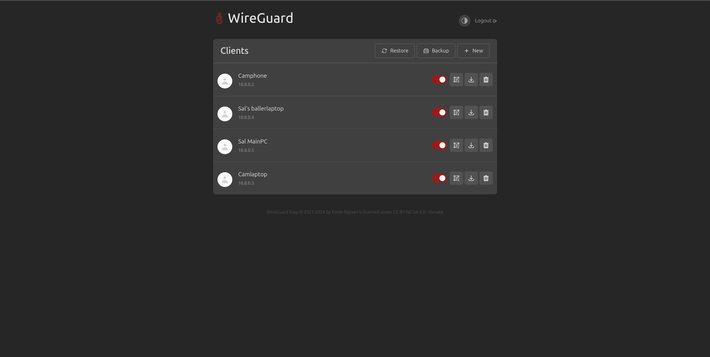
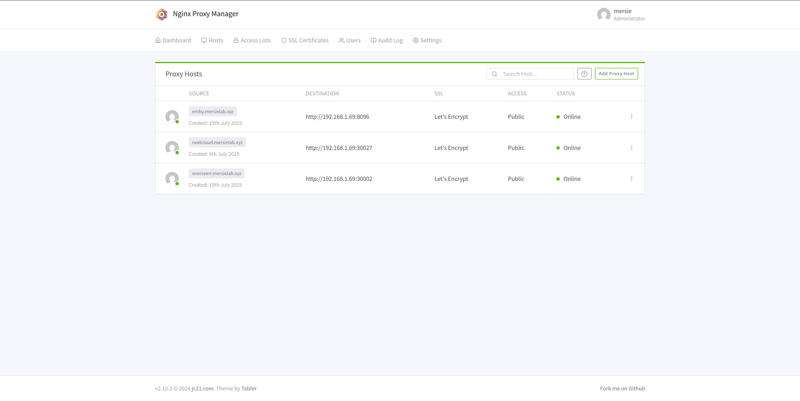
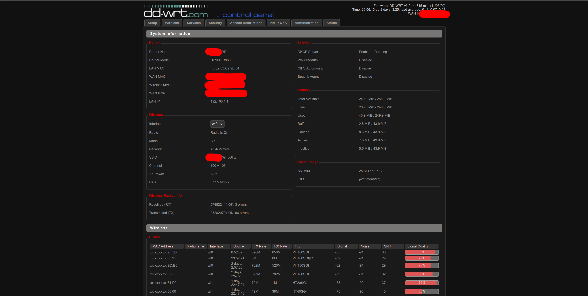

Cloudflare DNS
Configuration
- Domain: mersielab.xyz
- Proxy Status: DNS and CDN enabled
- Security: Always Use HTTPS + Under Attack Mode
- Records: A, AAAA, CNAME, MX
DNS Type
Proxied
TTL
Auto (1 min)
SSL
Full (Strict)
WireGuard VPN
Technical Specs
- Port: UDP 51820
- Clients: 5 devices (Phone, Laptop, etc.)
- Throughput: ~250Mbps
- Authentication: Public/Private Key
Peer Configuration
[Interface]
PrivateKey = [REDACTED]
Address = 10.8.0.1/24
ListenPort = 51820
[Peer]
PublicKey = [CLIENT_PUBKEY]
AllowedIPs = 10.8.0.2/32Nginx Proxy Manager
Proxy Hosts
- Services: Emby, Nextcloud, TrueNAS
- Ports: 80 → 443 redirect
- SSL: Let's Encrypt wildcard
- Access Control: IP whitelist
HTTP/2
Enabled
Caching
1GB RAM
Block Exploits
Enabled
DD-WRT Router
Router Configuration
- Model: Netgear R7000
- Firmware: DD-WRT v3.0-r53250
- Security: Custom iptables rules
- VLANs: Main, IoT, Guest
Key Features
QoS
Prioritize VoIP
TX Power
70mW (WiFi)
Port Forwarding
443 → NPM